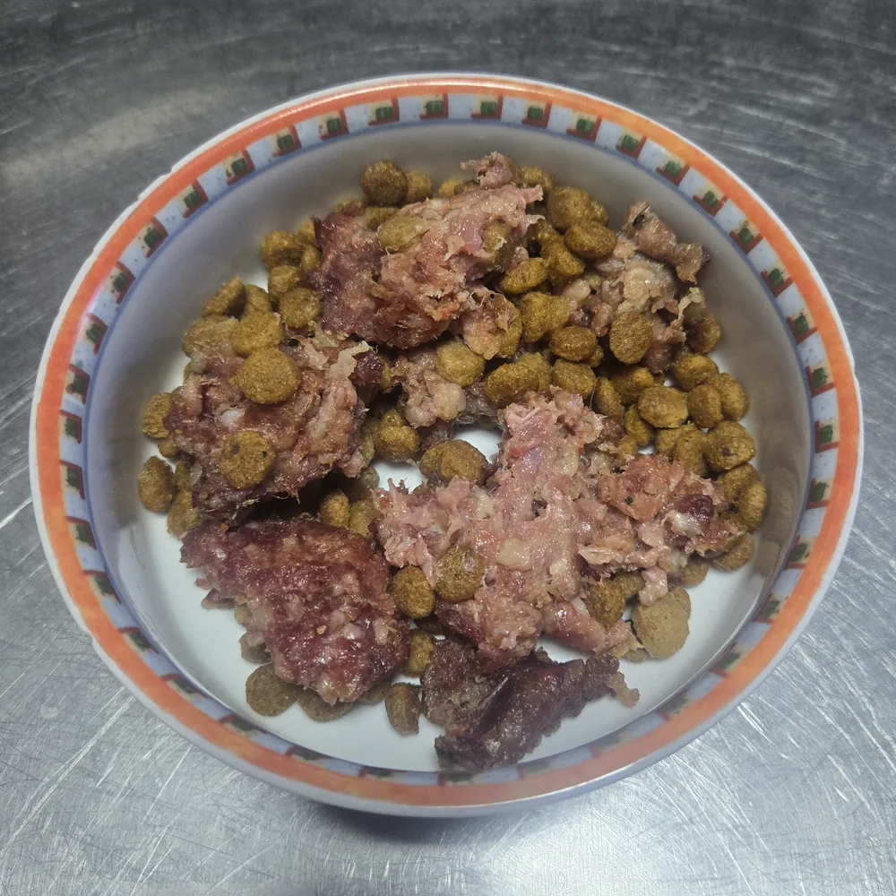

A la nostra carnisseria d’Andorra la Vella ens pregunten sovint com fer el canvi del pinso al BARF. Et recomanem fer el canvi de manera progressiva en 10 dies, també en gossos: si es canvia de cop hi pot haver diarrees o rebuig del menjar. En gats, que solen ser més reticents, pot caldre anar encara més a poc a poc. Per això hem preparat una guia de 10 dies.
La Negri, en plena transició
La Negri està passant ara mateix del pinso al BARF. Així és el seu plat aquests dies: el BARF barrejat amb el seu pinso de sempre. Cada dia porta una mica més de BARF i una mica menys de pinso, fins que l’últim dia només menja BARF.

El pla de 10 dies
Els percentatges es calculen sobre la ració diària, que pots saber amb la calculadora BARFEAND.
| Dies | BARF | Pinso |
|---|---|---|
| 1 i 2 | 20 % | 80 % |
| 3 i 4 | 40 % | 60 % |
| 5 i 6 | 60 % | 40 % |
| 7 i 8 | 80 % | 20 % |
| 9 i 10 | 100 % | 0 % |
Exemple: si la calculadora indica 400 g de BARF al dia, el primer dia serien 80 g de BARF barrejats amb el 80 % de la seva ració habitual de pinso.
Abans de començar
- Una sola proteïna suau: comença amb pollastre o gall dindi i mantén-la els 10 dies.
- Descongela a la nevera: el pots servir a temperatura ambient. Si el vol menys fred, treu-lo de la nevera 15–20 minuts abans o posa’l en un recipient tancat al bany maria amb aigua tèbia. No l’escalfis al microones ni a la paella: l’os cuit pot ser perillós.
- Consulta el veterinari abans de començar si el teu animal té alguna malaltia, és cadell o és gran.
Si és un gat, amb més calma
Els gats desconfien dels canvis. Si rebutja el BARF, repeteix la fase anterior uns dies més. No el deixis mai més de 24 hores sense menjar per forçar-lo: el dejuni és perillós per al seu fetge. Les nostres receptes porten cor, ric en taurina. En gats, consulta el teu veterinari si convé afegir-hi un suplement.
Què és normal
Unes femtes una mica toves un o dos dies són normals, i després solen ser més petites i fermes. Si hi ha diarrea més de dos dies, vòmits repetits o deixa de menjar, consulta el teu veterinari.
Descarrega la guia completa
Al PDF tens el pla dia a dia, els afegits que recomanem (ou, sardines, oli d’oliva verge extra, alga kelp…) i una taula per apuntar com va cada dia.
BARFEAND és menjar natural cru per a gossos i gats. Per a una alimentació equilibrada, et recomanem afegir-hi els suplements adequats (com ara olis rics en omega 3) i consultar el teu veterinari.
Pots veure les nostres receptes o escriure’ns per WhatsApp al +376 678 536 si tens dubtes durant el canvi.